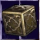
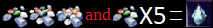
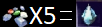
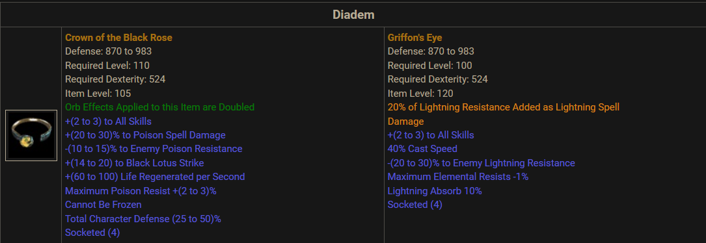

CRAFTING
Visit this thread for an in depth yet clear guide on crafting 🔨
And this one for the cube recipes docs. 
Items are subjected to being used in recipes, especially powerful ones, check the cube docs to know them all.
GENERAL INFO
To understand each item types look into the first section of each item type's docs section in the Official Documentation. It is very clear and precise, and will help you grasp how they work.
SOCKETABLES AND GOOD DROPS
- Some maps have a drop bias towards specific types of items (check the doc).
- The best way to drop gems is K3K.
- Best way to get arcane shards is by farming Mephisto, then Nihilatak.
TU (Tiers Uniques)
TUs have 4 ranks. Their stats requirement and general power depend on their stats. Check the docs for a list of them all, and their stats.
You can turn useless TU into arcane shards →  and 

Be careful when up-tiering a tiered unique, the requirements can jump tremendously from one tier to the other. Always check the docs out first. You cannot reduce a TU tier, only up-tiering is possible.
SU ( Sacred Uniques)
SU are the next 'rank' of item. Generally better than T4 TU they are important for progressing in the game. Each item types has one SU and one SSU (sacred-sacred-unique). SU on the left, SSU on the right.  A SSU isn't always better than an SU for your build. Read the documentation to check the item's stats and if they fit your build.
Sometimes a simple TU with good stats is better than an useless SU!
SU can be made into a token that add 1 (one) stat up when right clicking. Those are commonly referred as 'Sigs'. The maximum amount of sigs you can eat is 400.
This is a sig →